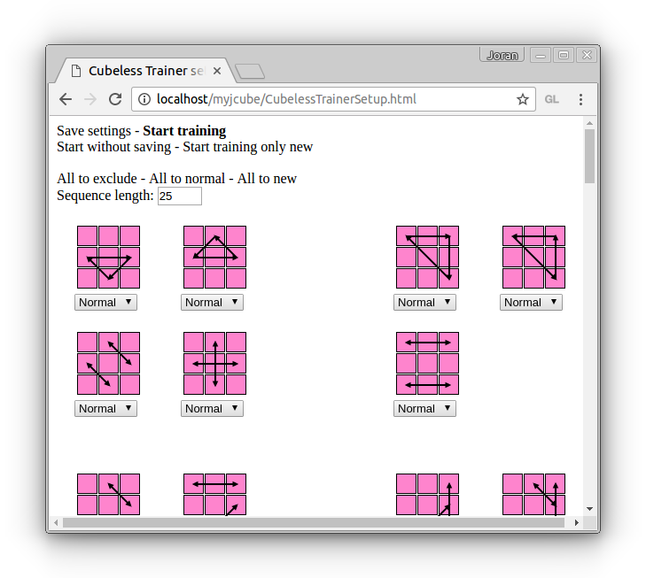
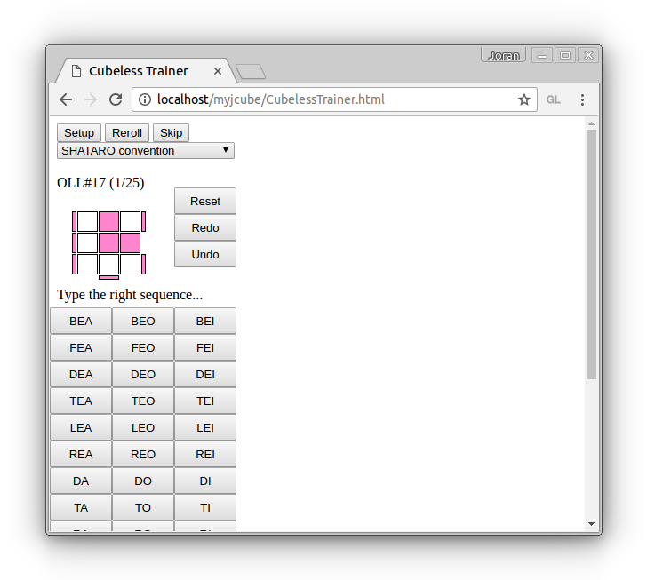

Links to the Cubeless Trainer
Setup

For each case, one can choose a frequency using the combobox below it.
- Exclude: the case will be simply ignored. It will not ever be submitted.
- Normal: the case will have no special priority. (use this level for cases that you already know well)
- New: the case will have huge chances to be submitted during each training.
Sequence length: permits to change the number of cases submitted during a training session. Since a configuration may occur only once during a training, it is possible that the number of cases effectively submitted is less than this number.
If the case has not the orientation you are used to, you can apply a rotation to it… In order to do that you just need to…
- Double click (or double tap) on the case
- Use the «rotate» buttons
- Press the «close» button
About saving… Parameters are automatically saved after pressing «start training». They use browser cookies.
Cubeless Trainer

The cases are submitted one by one. Enter the solution using the button board. When the case is solved, the tool automatically goes to the next case.
If the upper face is not the yellow one, the case is not considered as solved.
The history of solved cases is saved permanently (see next section).
How the cases are chosen
Here are the applied rules
- A case may appear only once during the same training session
- Cases flagged as "new" are chosen with the highest priority.
- Cases solved a long time ago will be chosen first.